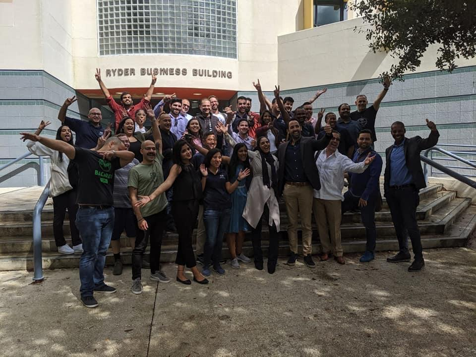

Master of Science in Software Development, Boston University, USA, Year 2022
Currently pursuing online MS in Software Development from Boston University.
MET CS 601 - Web Application Development
Introduction to Web Architecture
Introduction to HTML
Introduction to Cascading Style Sheets
Advanced CSS
Introduction to JavaScript
Object-Oriented JavaScript
The Document Object Model (DOM) and Events
Intermediate JavaScript
Advanced JavaScript
Asynchronous JavaScript
Survey of JavaScript Frameworks
Introduction to Vue.js
Designing and Building AI Products and Services, MIT, USA, Year 2022
Description: Completed MIT xPRO’s Designing Artificial Intelligence Products online course that includes framework for analyzing the various stages of AI product and solution design and the specific organizational and technical requirements involved.:
Week 1: Introduction to the Artificial Intelligence Design Process
Week 6: Superminds — Designing Organizations that Combine Artificial and Human Intelligence
Week 7: Marketplace Frontiers of AI Design: Research — Part I
Week 7: Marketplace Frontiers of AI Design: Research — Part II
Week 8: Marketplace Frontiers of AI Design: Practice
Master of Science in Information Systems, FIU College of Business, USA, Year 2018-2019

Completed MS in Information Systems from Florida International University College of Business, Miami, FL, USA from Aug 2018 to Oct 2019 with Grade ‘A’ (3.92 GPA)
Subjects & Projects:
Software Project for AIS 2019 Blockchain Hackathon
Won 2nd Prize in Association for Information Systems Student Chapters, AIS SCLC 2019 National Blockchain Hackathon. Designed and developed in team a software solution for farm management using Blockchain(IBM HyperLedger), Computer Vision(OpenCV), Artificial Intelligence and Java EE.
FIU Business News
Requirement analysis of the Problem statement.
Worked on Architecture design for a Used Java/J2EE technologies to develop web application for client server environment that integrates with the backend Image Recognition and Blockchain system.
Developed Image recognition system using YOLO Algorithm.
Developed backend Blockchain System on IBM Hyperledger to perform various business processes like
ISM 6316 - Project Management
Project: Project Management as per PMBOK v6 to incorporate ASC 842 guidelines into existing SaaS solution of a Real Estate company. Developed Project Charter and tracked project execution, monitoring and closure using Microsoft Project.
ISM 6205 - Database Management
Project: Designed Database Architecture for the software solution of an Emergency Clinic that provides Emergency dispatch, emergency admission, patient assessment, lab work and claims. Developed ER Model, relational representations, schema, indexing plan and build the database on Microsoft SQL Server.
ISM 6156 - Enterprise Information Systems
Project: SAP ERP for Global Bike Company and executed Product Costing (CO), Financial Accounting (FI), Human Capital Management (HCM), Payroll and Project Management. Worked on SAP MM, SAP SD, SAP PP, SAP WM, SAP Visualization, SAP Analytics and SAP Configuration. Conducted a complete simulation of Muesli Manufacturing Plant from taking orders to plant production to selling to retailers using SAP ERPSim. Activities included financial management, sales forecasting, production & procurement, pricing & marketing, product design and logistics.
QMB 6357 - Business Statistical Analysis
Project: Pricing calculation - Descriptive statistical modelling with 95% confidence interval using Microsoft excel.
ISM 6136 - Business Analytics Applications
Project: Sellers Funding loan company data - Did Predictive analysis using Linear, logistic Regression, decision tree & applied k means clustering & predicted the default sellers & significant factors that could be considered while funding loan to the sellers.
ISM 6106 - System Analysis & Design
Project: Restaurant use case & Car Rental Agency - Developed class diagram, use case, sequence diagrams, UI Diagram and Java programming.
ISM 6208 – Data Warehousing
Project: Conducted data analysis of Washington Crimes and Offences data. Created Star schema and performed ETL process using MSBI (SSIS, SSAS, SSRS) and Tableau Prep. Analysed the Visualization on Tableau desktop and Power BI.
ISM 6489 – E-Commerce and Internet Business Applications
Project: Designed and developed an online E-Commerce site for an electronic consumer product store. Designed and developed revenue models (sales, advertisements, service plans, promotions and partnerships), customer acquisition plan and conducted profit analysis.
Identified factors impacting revenue using linear regression & clustering algorithms for product segmentation & market basket analysis for electronic products recommendation of shop smart & displayed the highest revenue products from clusters.
Used advertising-subscription revenue model & Commission based profit model & customer funnel model to acquire customer.
Designed and developed complete E-Commerce site using Wordpress on AWS server and payment through WooCommerce with home page, search fields, filters, categories, search result page and contact pages.
ISM 6128 - Business Process Design
Project: Worked on complete business process transition of employee payment process. Developed business process models using IBM Holosofx Workbench for As-Is and To-Be system.
ISM 6328 – Information Security Management
Project: Prepared complete Enterprise Security plan and policies for a project of transitioning from on premise servers to google cloud.
ISM 6307 – Management of Information System Function
Project: Falcon Farms Inc. data - Analysed sales data, added external twitter data & weather data and applied linear, logistic regression, correlations to forecast product category & quantity which could be sent across different regions using R & Python. Build predictive model for sales.
Advanced Post Graduate Diploma in VLSI Design, VEDANT, India, Year 2007
Description: Completed Advance Post Graduate Diploma in VLSI Design from VEDANT (Cadence University), Semi-Conductor Laboratories, Chandigarh in 2007.
Advanced Digital Design
Verilog and VHDL
Synthesis & Timing Issues
PLD & FPGA Architecture
MOS Physics &CMOS Sub Systems Design
Scripting Language - Tcl
Layout Design
Analog & Mixed Signal Design
ASIC Design Methodology
Design for Testability
Project: Successfully completed the project based on 8 bit Risc Processor Designing in Verilog (Front End) and OPAMP Design (Back End) during APGD – VLSI.
Bachelor of Engineering in Electronics & Communications, VTU, India, Year 2003-2007
Completed BE in Electronics and Communications from Sri Krishna Institute of Tecnology affiliated to Visveswaraiah Technological University from Aug 2003 to July 2007 with Grade ‘First Class’.
Delivered the technical paper presentation on Hyper Threading in Processor (8th Semester, Technical Seminar) and the paper was awarded as the Best Paper, thereby got published in college magazine.
Completed engineering project of Telephone Based Computer System Control in 8th semester, BE (project work)